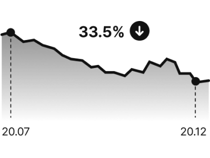
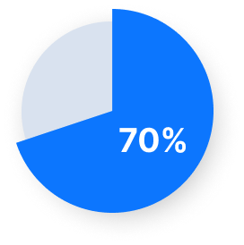
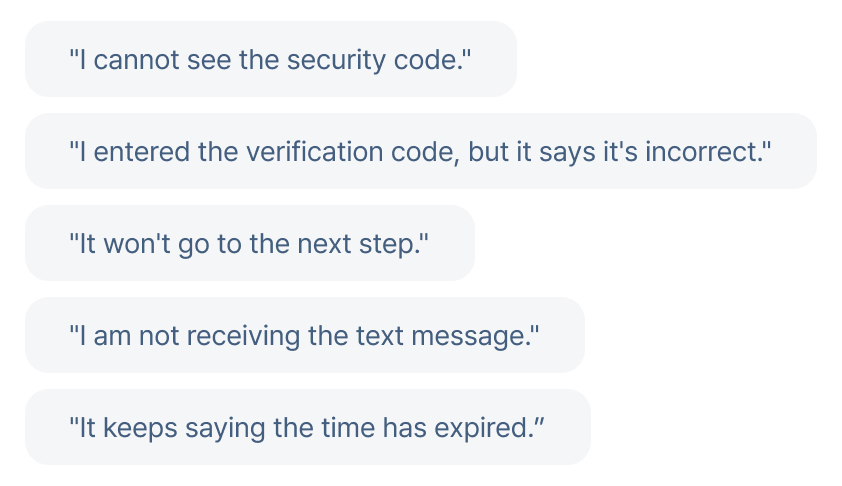
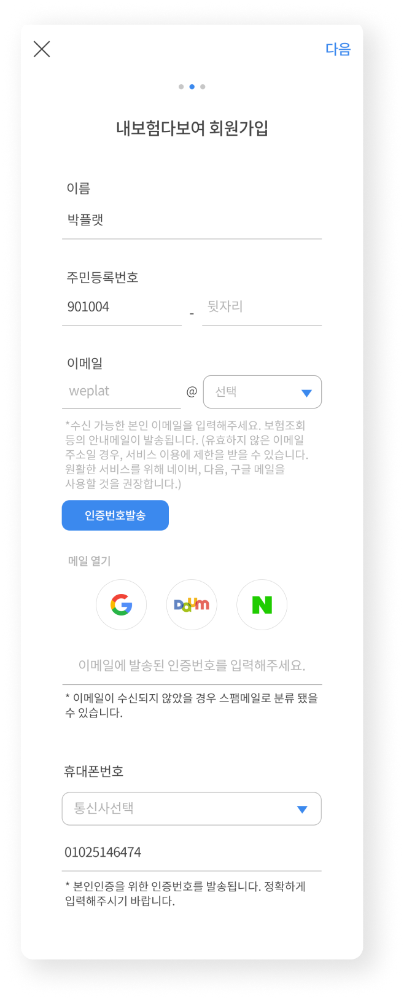
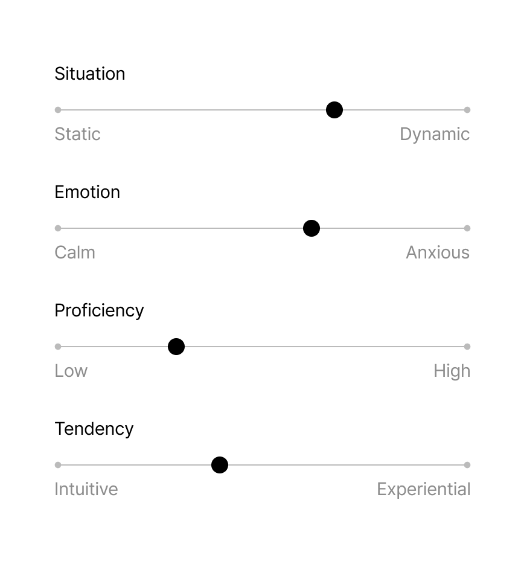
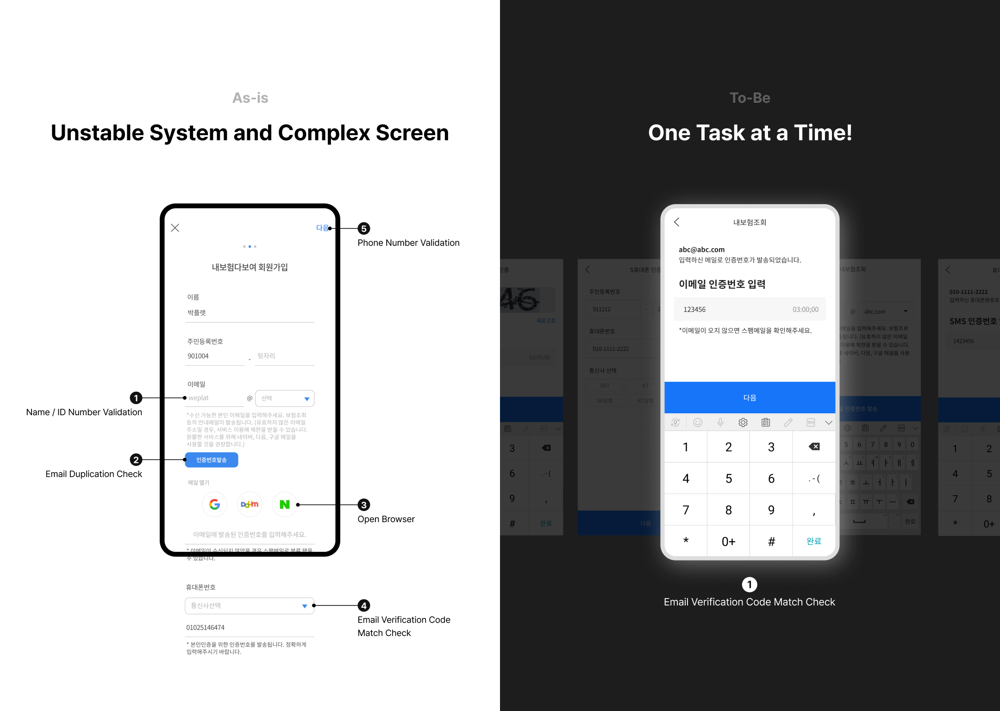

Identity Verification Flow
Users often dropped off during identity verification due to failures. We aimed to improve the unstable web scraping system through UX design. This project led to overall improvements in UX writing and interaction. After, verification success reached 83%, and user drop-off fell by 33.5%.



About 70% of customer service inquiries were related to issues during the identity verification process
Users frequently encountered problems such as missing security codes, incorrect verification code entries, SMS not received, delayed screen transitions, and timeouts.
These errors were caused not only by technical instability in the system but also by interface complexity and cognitive friction within the flow.

Why do these problems occur?
- Users tap the “Send verification code” button multiple times.
- The flow is not completed in a proper sequence.
- Incorrect information is entered.
- Users skip ahead to the next step.
- Users check their email only to find that the time has expired.
There is no such thing as an ideal user.
Real users didn’t behave according to the flow I had designed. Their actions varied depending on the situation, emotions, familiarity, and personal tendencies—all of which contributed to unexpected errors throughout the process.
Creating an Irrational User Model
On the subway after work, Impatient and anxious, Unfamiliar with the mobile, Skims through, focusing only on large text and icons

How can we solve this from a UX perspective?
- Tasks are designed to be handled one at a time.
- Give detailed feedback on what worked, what didn’t, and why.
- Clearly communicate what needs to be completed.
- Display only the most important information to prevent overload.
